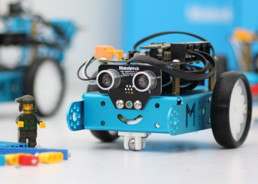

Robot seguidor de línea
Robot que utiliza sensores para detectar una línea y seguir su recorrido.
TECNOLOGÍA E INNOVACIÓN
La robótica es una disciplina que combina tecnología, programación, electrónica e ingeniería para crear máquinas capaces de realizar diferentes tareas.
CONOCER MÁS
La robótica es una rama de la tecnología dedicada al diseño, construcción y programación de robots.
Los robots pueden realizar tareas de manera automática o controlada por una persona. Se utilizan en diferentes áreas como la industria, la medicina, la educación, la exploración y la vida cotidiana.
Para funcionar, un robot necesita diferentes elementos que trabajan en conjunto, como sensores, motores, controladores y programas.

La idea de crear máquinas capaces de realizar tareas automáticamente existe desde hace muchos años.
Ctesibio de Alejandría desarrolló mecanismos automáticos que funcionaban mediante agua y aire.
Leonardo da Vinci diseñó un mecanismo con forma humana conocido como el caballero mecánico.
La palabra "robot" apareció en la obra R.U.R., escrita por Karel Čapek.
George Devol desarrolló uno de los primeros robots industriales programables.
Unimate comenzó a utilizarse en una fábrica, convirtiéndose en uno de los primeros robots industriales utilizados comercialmente.
Un robot está formado por diferentes componentes que permiten que pueda percibir su entorno, procesar información y realizar acciones.
Permiten detectar información del entorno, como luz, temperatura, distancia o movimiento.
Son los componentes que permiten realizar movimientos y acciones.
Procesa la información y controla las acciones que debe realizar el robot.
Proporciona la energía necesaria para que los componentes puedan funcionar.
Indica al robot qué acciones debe realizar y cómo debe responder ante diferentes situaciones.
La programación es fundamental en la robótica porque permite indicar al robot qué debe hacer.
Mediante instrucciones, el robot puede recibir información de sus sensores, procesarla y ejecutar diferentes acciones.
La robótica se relaciona con diferentes áreas del conocimiento conocidas como STEM.
Trabajar con robótica permite desarrollar conocimientos científicos y tecnológicos mientras se resuelven problemas mediante proyectos prácticos.
Utiliza robots para realizar tareas en fábricas, como soldadura, montaje y manipulación de objetos.
Se utiliza en medicina para ayudar en procedimientos, rehabilitación y asistencia a pacientes.
Utiliza robots para aprender programación, electrónica, matemática y resolución de problemas.
Trabaja con robots capaces de desplazarse por diferentes espacios.
Se centra en robots diseñados con características similares al cuerpo humano.
Desarrolla robots para explorar lugares donde las personas no pueden trabajar fácilmente.
Industriales: utilizados principalmente en fábricas.
Móviles: pueden desplazarse de un lugar a otro.
Humanoides: poseen una estructura inspirada en el cuerpo humano.
Autónomos: pueden realizar determinadas tareas sin recibir instrucciones constantemente.
Educativos: utilizados para aprender programación y tecnología.
Actualmente podemos encontrar robots en diferentes lugares y actividades.
La inteligencia artificial permite desarrollar sistemas capaces de analizar información y tomar determinadas decisiones.
Cuando la inteligencia artificial se combina con la robótica, los robots pueden interpretar mejor su entorno y realizar tareas más complejas.
Estas tecnologías se utilizan, por ejemplo, en robots de asistencia, vehículos autónomos y sistemas de reconocimiento.

Los robots pueden ayudar a las personas realizando tareas repetitivas, peligrosas o que requieren mucha precisión.
Sin embargo, las personas siguen siendo fundamentales para diseñar, programar, controlar y mejorar estas tecnologías.
El desarrollo de robots también presenta diferentes desafíos.
Algunos de ellos están relacionados con el costo de los equipos, la seguridad, el consumo de energía, la programación y el uso responsable de la tecnología.
Robot que utiliza sensores para detectar una línea y seguir su recorrido.
Utiliza sensores para detectar objetos y cambiar su dirección para evitar chocarlos.
Puede realizar movimientos programados para agarrar, trasladar o colocar objetos.
Está diseñado para aprender programación, electrónica y pensamiento lógico.
La robótica educativa permite aprender mediante la creación y programación de proyectos.
También ayuda a desarrollar la creatividad, el trabajo en equipo, el pensamiento lógico y la capacidad de resolver problemas.
Algunos ejemplos de robots y sistemas automatizados que pueden formar parte de nuestra vida cotidiana son las aspiradoras robot, sistemas de seguridad, drones y diferentes dispositivos inteligentes.
La palabra "robot" proviene del idioma checo.
Los robots pueden tener diferentes formas dependiendo de la tarea para la que fueron diseñados.
Algunos robots pueden trabajar en lugares donde sería peligroso para una persona.
La robótica combina conocimientos de varias disciplinas.
TECNOLOGÍA
Aprender sobre robótica nos permite comprender mejor cómo funcionan muchas de las tecnologías que forman parte de nuestro mundo.
VOLVER AL INICIO